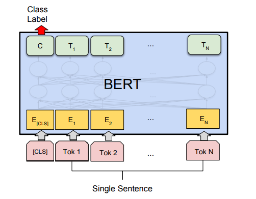
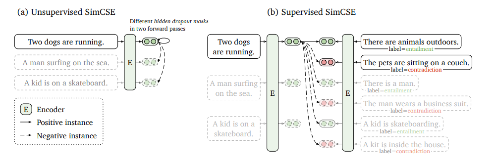

随意的学习总结5：Hugging Face Transformers初探
Hugging Face🤗公司的开源库Transformers是深度学习领域非常热门的工具，这个库里面集成了各种各样的Transformer架构的模型，包括BERT等等，它提供了非常方便的API来搭建Transformer架构的模型或者使用预训练好的模型进行各种任务，这一次我们主要来尝试一下用库中提供的BERT模型进行句子分类任务的微调，并尝试使用SimCSE这样更好的Sentence Embedding来完成句子分类任务。
Transformers库的Pipeline
我们首先要了解一下Transformers这个库的使用方法，我们知道PyTorch使用的时候有这样几个东西需要定义：
- 数据集的
Dataset类和数据加载器DataLoader - 模型本身的代码，需要继承
nn.Module类 - 模型的训练，测试等过程的代码
而Transformer库的使用过程中依然需要遵循这个基本的模式，但是在调用它提供的预训练模型的时候，需要另外考虑这样几个东西(我们以BERT模型为例)：
- 分词器Tokenizer，将Raw Data处理成一个token序列输入模型中
- 模型的配置信息BertConfig，这个类记录了一个BERT模型的配置信息
- 模型BertModel，这个就是一个完整的BERT模型架构，可以用BertConfig来进行初始化
- 同时Transformers库中可以用
from_pretrained()方法在加载预训练好的模型参数，也可以初始化像分词器之类的重要组件
使用Transformers库进行机器学习任务的整个Pipeline和PyTorch基本是一致的，只不过它额外提供了一些很方便的API来调用包括BERT在内的预训练模型。
简单的BERT文本分类
我们尝试用BERT进行简单的文本分类，这一次我们使用的数据集是斯坦福大学研究者提出的SST-1数据集，这是一个句子级的情感分类数据集，一共有5种情感类别，它的训练集一共有8544条数据，而测试集有2210条数据，这些数据都是比较短的句子，因此SST-1是一个比较小的数据集。(BERT原论文里的SST-2和SST-1类似，但是SST-2是一个二分类数据集，相比之下SST-1的粒度更细一点)

下面我们使用BERT来进行微调实验，使用的模型也非常简单，就是将输入的句子通过BERT编码之后，用一定的方式得到整个句子的表示，然后通过一个线性层投影到5种分类结果中，并通过SoftMax来计算该句子属于每一类别的概率，然后用交叉熵作为loss函数即可，这里得到句子的编码表示的方法有两种，分别是：
- 直接使用句子头部的CLS标签作为整个句子的编码表示
- 使用整个句子所有token的表示的平均值作为句子的编码表示
而我们使用的BERT模型也可以更换成其他的，比如后面会提到的使用BERT相同架构但是预训练目标不同的SimCSE模型。
剩下的事情就只剩下coding了，其中模型部分的代码如下：
1 | import torch |
之后就可以开始训练，对两种不同的句子表示方法，我们都使用相同的超参数，并使用Adam作为优化器，超参数设置如下：
| 参数 | 设定值 |
|---|---|
| batch size | 32 |
| learning rate | 2e-5 |
得到的结果如下：
| 模型 | 在测试集上的准确率(%) |
|---|---|
| BERT+CLS | 52.03 |
| BERT+Mean Pooling | 51.04 |
我们发现在这个任务上，CLS标签作为句子表示的效果更好，同时对比一些现有的baseline，根据我查到的数据，传统的基于词向量以及TextCNN的各种方法在SST-1任务上的表现一般都在45%-50%之间，可以看出BERT相比于这些传统的文本分类方法要好很多。
SimCSE: 更好的Sentence Embedding
SimCSE是在论文《SimCSE: Simple Contrastive Learning of Sentence Embeddings》这篇论文种提出的，它还是采用了BERT的架构，但是改变了预训练任务，让模型能生成更合适的句子级别的表示(BERT的预训练任务是词级别的MLM，所以它的词表示似乎更好一点)

我们用预训练好的SimCSE模型来进行和上面一样的微调，得到在SST-1的测试集上的预测准确率约为53.53%，这说明SimCSE在情感分类这样句子级别的任务上，确实要比BERT-base表现得更好。